PARTS AND MATERIALS
A multimeter is an electrical instrument capable of measuring voltage, current, and resistance. Digital multimeters have numerical displays, like digital clocks, for indicating the quantity of voltage, current, or resistance. Analog multimeters indicate these quantities by means of a moving pointer over a printed scale.
Analog multimeters tend to be less expensive than digital multimeters, and more beneficial as learning tools for the first-time student of electricity. I strongly recommend purchasing an analog multimeter before purchasing a digital multimeter, but to eventually have both in your tool kit for these experiments.
CROSS-REFERENCES
Lessons In Electric Circuits, Volume 1, chapter 1: "Basic Concepts of Electricity"
Lessons In Electric Circuits, Volume 1, chapter 8: "DC Metering Circuits"
LEARNING OBJECTIVES
ILLUSTRATION
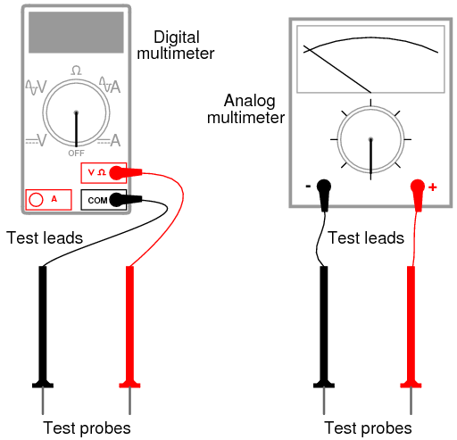
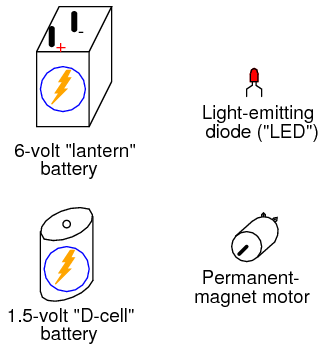
INSTRUCTIONS
In all the experiments in this book, you will be using some sort of test equipment to measure aspects of electricity you cannot directly see, feel, hear, taste, or smell. Electricity -- at least in small, safe quantities -- is insensible by our human bodies. Your most fundamental "eyes" in the world of electricity and electronics will be a device called a multimeter. Multimeters indicate the presence of, and measure the quantity of, electrical properties such as voltage, current, and resistance. In this experiment, you will familiarize yourself with the measurement of voltage.
Voltage is the measure of electrical "push" ready to motivate electrons to move through a conductor. In scientific terms, it is the specific energy per unit charge, mathematically defined as joules per coulomb. It is analogous to pressure in a fluid system: the force that moves fluid through a pipe, and is measured in the unit of the Volt (V).
Your multimeter should come with some basic instructions. Read them well! If your multimeter is digital, it will require a small battery to operate. If it is analog, it does not need a battery to measure voltage.
Some digital multimeters are autoranging. An autoranging meter has only a few selector switch (dial) positions. Manual-ranging meters have several different selector positions for each basic quantity: several for voltage, several for current, and several for resistance. Autoranging is usually found on only the more expensive digital meters, and is to manual ranging as an automatic transmission is to a manual transmission in a car. An autoranging meter "shifts gears" automatically to find the best measurement range to display the particular quantity being measured.
Set your multimeter's selector switch to the highest-value "DC volt" position available. Autoranging multimeters may only have a single position for DC voltage, in which case you need to set the switch to that one position. Touch the red test probe to the positive (+) side of a battery, and the black test probe to the negative (-) side of the same battery. The meter should now provide you with some sort of indication. Reverse the test probe connections to the battery if the meter's indication is negative (on an analog meter, a negative value is indicated by the pointer deflecting left instead of right).
If your meter is a manual-range type, and the selector switch has been set to a high-range position, the indication will be small. Move the selector switch to the next lower DC voltage range setting and reconnect to the battery. The indication should be stronger now, as indicated by a greater deflection of the analog meter pointer (needle), or more active digits on the digital meter display. For the best results, move the selector switch to the lowest-range setting that does not "over-range" the meter. An over-ranged analog meter is said to be "pegged," as the needle will be forced all the way to the right-hand side of the scale, past the full-range scale value. An over-ranged digital meter sometimes displays the letters "OL", or a series of dashed lines. This indication is manufacturer-specific.
What happens if you only touch one meter test probe to one end of a battery? How does the meter have to connect to the battery in order to provide an indication? What does this tell us about voltmeter use and the nature of voltage? Is there such a thing as voltage "at" a single point?
Be sure to measure more than one size of battery, and learn how to select the best voltage range on the multimeter to give you maximum indication without over-ranging.
Now switch your multimeter to the lowest DC voltage range available, and touch the meter's test probes to the terminals (wire leads) of the light-emitting diode (LED). An LED is designed to produce light when powered by a small amount of electricity, but LEDs also happen to generate DC voltage when exposed to light, somewhat like a solar cell. Point the LED toward a bright source of light with your multimeter connected to it, and note the meter's indication:
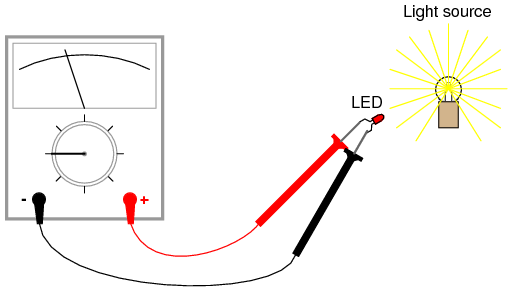
Batteries develop electrical voltage through chemical reactions. When a battery "dies," it has exhausted its original store of chemical "fuel." The LED, however, does not rely on an internal "fuel" to generate voltage; rather, it converts optical energy into electrical energy. So long as there is light to illuminate the LED, it will produce voltage.
Another source of voltage through energy conversion a generator. The small electric motor specified in the "Parts and Materials" list functions as an electrical generator if its shaft is turned by a mechanical force. Connect your voltmeter (your multimeter, set to the "volt" function) to the motor's terminals just as you connected it to the LED's terminals, and spin the shaft with your fingers. The meter should indicate voltage by means of needle deflection (analog) or numerical readout (digital).
If you find it difficult to maintain both meter test probes in connection with the motor's terminals while simultaneously spinning the shaft with your fingers, you may use alligator clip "jumper" wires like this:
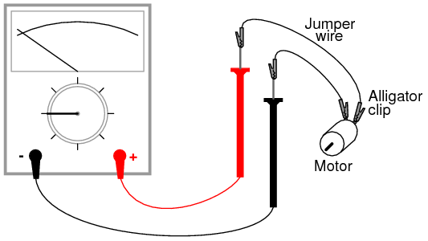
Determine the relationship between voltage and generator shaft speed? Reverse the generator's direction of rotation and note the change in meter indication. When you reverse shaft rotation, you change the polarity of the voltage created by the generator. The voltmeter indicates polarity by direction of needle direction (analog) or sign of numerical indication (digital). When the red test lead is positive (+) and the black test lead negative (-), the meter will register voltage in the normal direction. If the applied voltage is of the reverse polarity (negative on red and positive on black), the meter will indicate "backwards."
PARTS AND MATERIALS
This experiment describes how to measure the electrical resistance of several objects. You need not possess all items listed above in order to effectively learn about resistance. Conversely, you need not limit your experiments to these items. However, be sure to never measure the resistance of any electrically "live" object or circuit. In other words, do not attempt to measure the resistance of a battery or any other source of substantial voltage using a multimeter set to the resistance ("ohms") function. Failing to heed this warning will likely result in meter damage and even personal injury.
CROSS-REFERENCES
Lessons In Electric Circuits, Volume 1, chapter 1: "Basic Concepts of Electricity"
Lessons In Electric Circuits, Volume 1, chapter 8: "DC Metering Circuits"
LEARNING OBJECTIVES
ILLUSTRATION
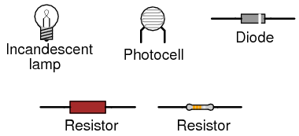
INSTRUCTIONS
Resistance is the measure of electrical "friction" as electrons move through a conductor. It is measured in the unit of the "Ohm," that unit symbolized by the capital Greek letter omega (Ω).
Set your multimeter to the highest resistance range available. The resistance function is usually denoted by the unit symbol for resistance: the Greek letter omega (Ω), or sometimes by the word "ohms." Touch the two test probes of your meter together. When you do, the meter should register 0 ohms of resistance. If you are using an analog meter, you will notice the needle deflect full-scale when the probes are touched together, and return to its resting position when the probes are pulled apart. The resistance scale on an analog multimeter is reverse-printed from the other scales: zero resistance in indicated at the far right-hand side of the scale, and infinite resistance is indicated at the far left-hand side. There should also be a small adjustment knob or "wheel" on the analog multimeter to calibrate it for "zero" ohms of resistance. Touch the test probes together and move this adjustment until the needle exactly points to zero at the right-hand end of the scale.
Although your multimeter is capable of providing quantitative values of measured resistance, it is also useful for qualitative tests of continuity: whether or not there is a continuous electrical connection from one point to another. You can, for instance, test the continuity of a piece of wire by connecting the meter probes to opposite ends of the wire and checking to see the the needle moves full-scale. What would we say about a piece of wire if the ohmmeter needle didn't move at all when the probes were connected to opposite ends?
Digital multimeters set to the "resistance" mode indicate non-continuity by displaying some non-numerical indication on the display. Some models say "OL" (Open-Loop), while others display dashed lines.
Use your meter to determine continuity between the holes on a breadboard: a device used for temporary construction of circuits, where component terminals are inserted into holes on a plastic grid, metal spring clips underneath each hole connecting certain holes to others. Use small pieces of 22-gauge solid copper wire, inserted into the holes of the breadboard, to connect the meter to these spring clips so that you can test for continuity:
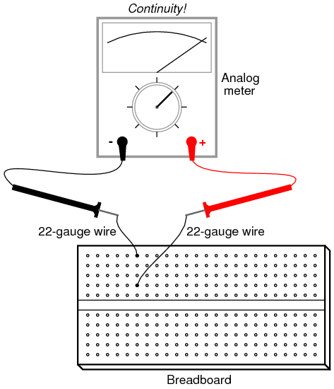
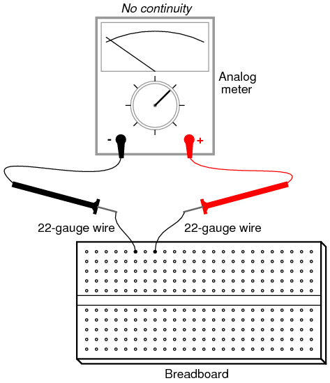
An important concept in electricity, closely related to electrical continuity, is that of points being electrically common to each other. Electrically common points are points of contact on a device or in a circuit that have negligible (extremely small) resistance between them. We could say, then, that points within a breadboard column (vertical in the illustrations) are electrically common to each other, because there is electrical continuity between them. Conversely, breadboard points within a row (horizontal in the illustrations) are not electrically common, because there is no continuity between them. Continuity describes what is between points of contact, while commonality describes how the points themselves relate to each other.
Like continuity, commonality is a qualitative assessment, based on a relative comparison of resistance between other points in a circuit. It is an important concept to grasp, because there are certain facts regarding voltage in relation to electrically common points that are valuable in circuit analysis and troubleshooting, the first one being that there will never be substantial voltage dropped between points that are electrically common to each other.
Select a 10,000 ohm (10 kΩ) resistor from your parts assortment. This resistance value is indicated by a series of color bands: Brown, Black, Orange, and then another color representing the precision of the resistor, Gold (+/- 5%) or Silver (+/- 10%). Some resistors have no color for precision, which marks them as +/- 20%. Other resistors use five color bands to denote their value and precision, in which case the colors for a 10 kΩ resistor will be Brown, Black, Black, Red, and a fifth color for precision.
Connect the meter's test probes across the resistor as such, and note its indication on the resistance scale:
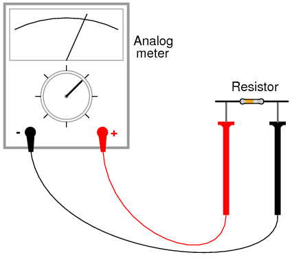
If the needle points very close to zero, you need to select a lower resistance range on the meter, just as you needed to select an appropriate voltage range when reading the voltage of a battery.
If you are using a digital multimeter, you should see a numerical figure close to 10 shown on the display, with a small "k" symbol on the right-hand side denoting the metric prefix for "kilo" (thousand). Some digital meters are manually-ranged, and require appropriate range selection just as the analog meter. If yours is like this, experiment with different range switch positions and see which one gives you the best indication.
Try reversing the test probe connections on the resistor. Does this change the meter's indication at all? What does this tell us about the resistance of a resistor? What happens when you only touch one probe to the resistor? What does this tell us about the nature of resistance, and how it is measured? How does this compare with voltage measurement, and what happened when we tried to measure battery voltage by touching only one probe to the battery?
When you touch the meter probes to the resistor terminals, try not to touch both probe tips to your fingers. If you do, you will be measuring the parallel combination of the resistor and your own body, which will tend to make the meter indication lower than it should be! When measuring a 10 kΩ resistor, this error will be minimal, but it may be more severe when measuring other values of resistor.
You may safely measure the resistance of your own body by holding one probe tip with the fingers of one hand, and the other probe tip with the fingers of the other hand. Note: be very careful with the probes, as they are often sharpened to a needle-point. Hold the probe tips along their length, not at the very points! You may need to adjust the meter range again after measuring the 10 kΩ resistor, as your body resistance tends to be greater than 10,000 ohms hand-to-hand. Try wetting your fingers with water and re-measuring resistance with the meter. What impact does this have on the indication? Try wetting your fingers with saltwater prepared using the glass of water and table salt, and re-measuring resistance. What impact does this have on your body's resistance as measured by the meter?
Resistance is the measure of friction to electron flow through an object. The less resistance there is between two points, the harder it is for electrons to move (flow) between those two points. Given that electric shock is caused by a large flow of electrons through a person's body, and increased body resistance acts as a safeguard by making it more difficult for electrons to flow through us, what can we ascertain about electrical safety from the resistance readings obtained with wet fingers? Does water increase or decrease shock hazard to people?
Measure the resistance of a rectifying diode with an analog meter. Try reversing the test probe connections to the diode and re-measure resistance. What strikes you as being remarkable about the diode, especially in contrast to the resistor?
Take a piece of paper and draw a very heavy black mark on it with a pencil (not a pen!). Measure resistance on the black strip with your meter, placing the probe tips at each end of the mark like this:
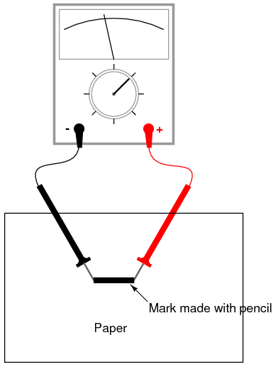
Move the probe tips closer together on the black mark and note the change in resistance value. Does it increase or decrease with decreased probe spacing? If the results are inconsistent, you need to redraw the mark with more and heavier pencil strokes, so that it is consistent in its density. What does this teach you about resistance versus length of a conductive material?
Connect your meter to the terminals of a cadmium-sulphide (CdS) photocell and measure the change in resistance created by differences in light exposure. Just as with the light-emitting diode (LED) of the voltmeter experiment, you may want to use alligator-clip jumper wires to make connection with the component, leaving your hands free to hold the photocell to a light source and/or change meter ranges:
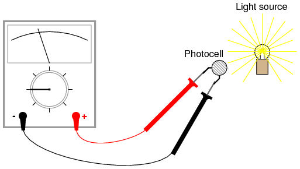
Experiment with measuring the resistance of several different types of materials, just be sure not to try measure anything that produces substantial voltage, like a battery. Suggestions for materials to measure are: fabric, plastic, wood, metal, clean water, dirty water, salt water, glass, diamond (on a diamond ring or other piece of jewelry), paper, rubber, and oil.
PARTS AND MATERIALS
From this experiment on, a multimeter is assumed to be necessary and will not be included in the required list of parts and materials. In all subsequent illustrations, a digital multimeter will be shown instead of an analog meter unless there is some particular reason to use an analog meter. You are encouraged to use both types of meters to gain familiarity with the operation of each in these experiments.
CROSS-REFERENCES
Lessons In Electric Circuits, Volume 1, chapter 1: "Basic Concepts of Electricity"
LEARNING OBJECTIVES
SCHEMATIC DIAGRAM
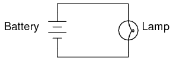
ILLUSTRATION
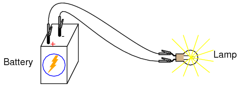
INSTRUCTIONS
This is the simplest complete circuit in this collection of experiments: a battery and an incandescent lamp. Connect the lamp to the battery as shown in the illustration, and the lamp should light, assuming the battery and lamp are both in good condition and they are matched to one another in terms of voltage.
If there is a "break" (discontinuity) anywhere in the circuit, the lamp will fail to light. It does not matter where such a break occurs! Many students assume that because electrons leave the negative (-) side of the battery and continue through the circuit to the positive (+) side, that the wire connecting the negative terminal of the battery to the lamp is more important to circuit operation than the other wire providing a return path for electrons back to the battery. This is not true!
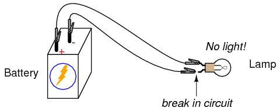
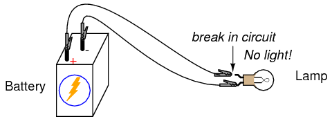
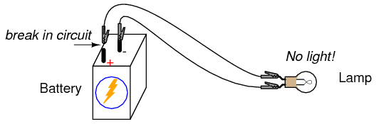
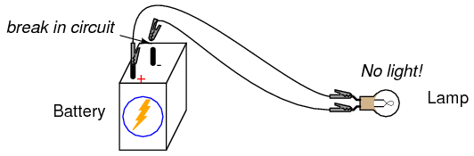
Using your multimeter set to the appropriate "DC volt" range, measure voltage across the battery, across the lamp, and across each jumper wire. Familiarize yourself with the normal voltages in a functioning circuit.
Now, "break" the circuit at one point and re-measure voltage between the same sets of points, additionally measuring voltage across the break like this:
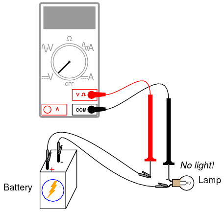
What voltages measure the same as before? What voltages are different since introducing the break? How much voltage is manifest, or dropped across the break? What is the polarity of the voltage drop across the break, as indicated by the meter?
Re-connect the jumper wire to the lamp, and break the circuit in another place. Measure all voltage "drops" again, familiarizing yourself with the voltages of an "open" circuit.
Construct the same circuit on a breadboard, taking care to place the lamp and wires into the breadboard in such a way that continuity will be maintained. The example shown here is only that: an example, not the only way to build a circuit on a breadboard:
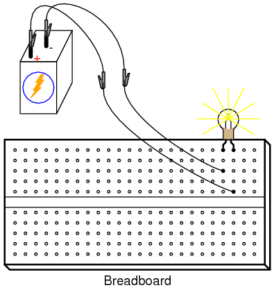
Experiment with different configurations on the breadboard, plugging the lamp into different holes. If you encounter a situation where the lamp refuses to light up and the connecting wires are getting warm, you probably have a situation known as a short circuit, where a lower-resistance path than the lamp bypasses current around the lamp, preventing enough voltage from being dropped across the lamp to light it up. Here is an example of a short circuit made on a breadboard:
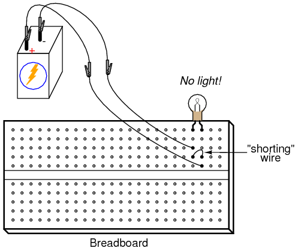
Here is an example of an accidental short circuit of the type typically made by students unfamiliar with breadboard usage:
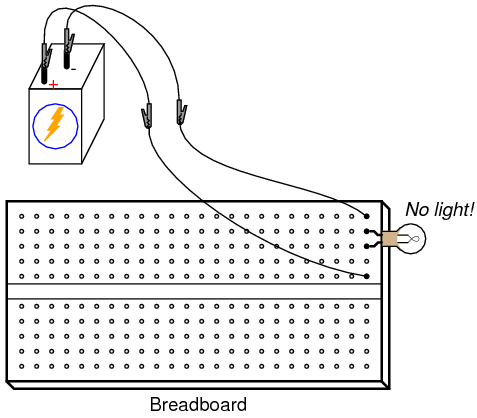
Here there is no "shorting" wire present on the breadboard, yet there is a short circuit, and the lamp refuses to light. Based on your understanding of breadboard hole connections, can you determine where the "short" is in this circuit?
Short circuits are generally to be avoided, as they result in very high rates of electron flow, causing wires to heat up and battery power sources to deplete. If the power source is substantial enough, a short circuit may cause heat of explosive proportions to manifest, causing equipment damage and hazard to nearby personnel. This is what happens when a tree limb "shorts" across wires on a power line: the limb -- being composed of wet wood -- acts as a low-resistance path to electric current, resulting in heat and sparks.
You may also build the battery/lamp circuit on a terminal strip: a length of insulating material with metal bars and screws to attach wires and component terminals to. Here is an example of how this circuit might be constructed on a terminal strip:
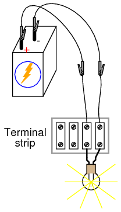
PARTS AND MATERIALS
Basic circuit construction components such as breadboard, terminal strip, and jumper wires are also assumed to be available from now on, leaving only components and materials unique to the project listed under "Parts and Materials."
CROSS-REFERENCES
Lessons In Electric Circuits, Volume 1, chapter 1: "Basic Concepts of Electricity"
Lessons In Electric Circuits, Volume 1, chapter 8: "DC Metering Circuits"
LEARNING OBJECTIVES
SCHEMATIC DIAGRAM
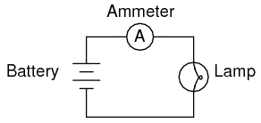
ILLUSTRATION
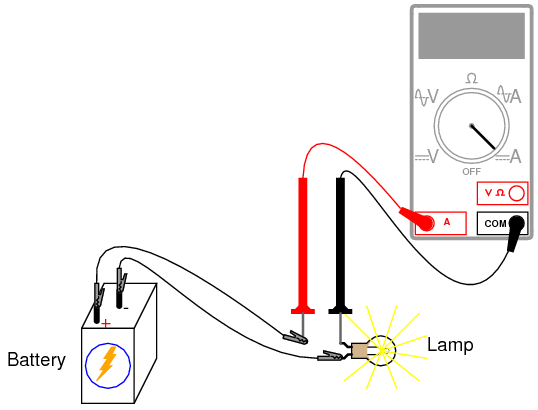
INSTRUCTIONS
Current is the measure of the rate of electron "flow" in a circuit. It is measured in the unit of the Ampere, simply called "Amp," (A).
The most common way to measure current in a circuit is to break the circuit open and insert an "ammeter" in series (in-line) with the circuit so that all electrons flowing through the circuit also have to go through the meter. Because measuring current in this manner requires the meter be made part of the circuit, it is a more difficult type of measurement to make than either voltage or resistance.
Some digital meters, like the unit shown in the illustration, have a separate jack to insert the red test lead plug when measuring current. Other meters, like most inexpensive analog meters, use the same jacks for measuring voltage, resistance, and current. Consult your owner's manual on the particular model of meter you own for details on measuring current.
When an ammeter is placed in series with a circuit, it ideally drops no voltage as current goes through it. In other words, it acts very much like a piece of wire, with very little resistance from one test probe to the other. Consequently, an ammeter will act as a short circuit if placed in parallel (across the terminals of) a substantial source of voltage. If this is done, a surge in current will result, potentially damaging the meter:
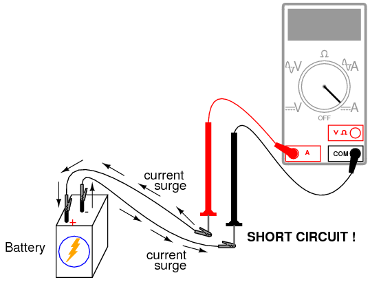
Ammeters are generally protected from excessive current by means of a small fuse located inside the meter housing. If the ammeter is accidently connected across a substantial voltage source, the resultant surge in current will "blow" the fuse and render the meter incapable of measuring current until the fuse is replaced. Be very careful to avoid this scenario!
You may test the condition of a multimeter's fuse by switching it to the resistance mode and measuring continuity through the test leads (and through the fuse). On a meter where the same test lead jacks are used for both resistance and current measurement, simply leave the test lead plugs where they are and touch the two probes together. On a meter where different jacks are used, this is how you insert the test lead plugs to check the fuse:
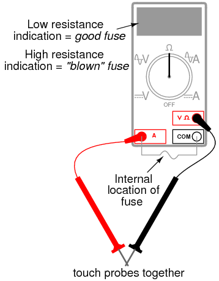
Build the one-battery, one-lamp circuit using jumper wires to connect the battery to the lamp, and verify that the lamp lights up before connecting the meter in series with it. Then, break the circuit open at any point and connect the meter's test probes to the two points of the break to measure current. As usual, if your meter is manually-ranged, begin by selecting the highest range for current, then move the selector switch to lower range positions until the strongest indication is obtained on the meter display without over-ranging it. If the meter indication is "backwards," (left motion on analog needle, or negative reading on a digital display), then reverse the test probe connections and try again. When the ammeter indicates a normal reading (not "backwards"), electrons are entering the black test lead and exiting the red. This is how you determine direction of current using a meter.
For a 6-volt battery and a small lamp, the circuit current will be in the range of thousandths of an amp, or milliamps. Digital meters often show a small letter "m" in the right-hand side of the display to indicate this metric prefix.
Try breaking the circuit at some other point and inserting the meter there instead. What do you notice about the amount of current measured? Why do you think this is?
Re-construct the circuit on a breadboard like this:
Students often get confused when connecting an ammeter to a breadboard circuit. How can the meter be connected so as to intercept all the circuit's current and not create a short circuit? One easy method that guarantees success is this:
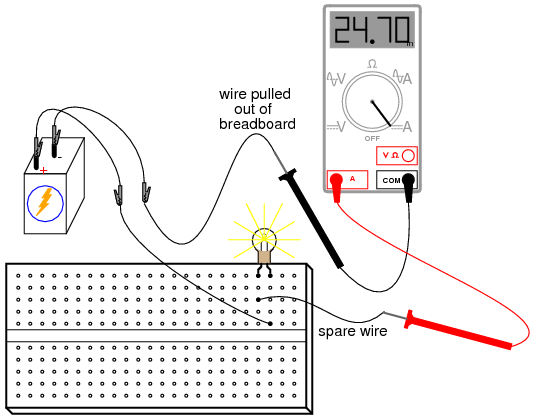
Again, measure current through different wires in this circuit, following the same connection procedure outlined above. What do you notice about these current measurements? The results in the breadboard circuit should be the same as the results in the free-form (no breadboard) circuit.
Building the same circuit on a terminal strip should also yield similar results:
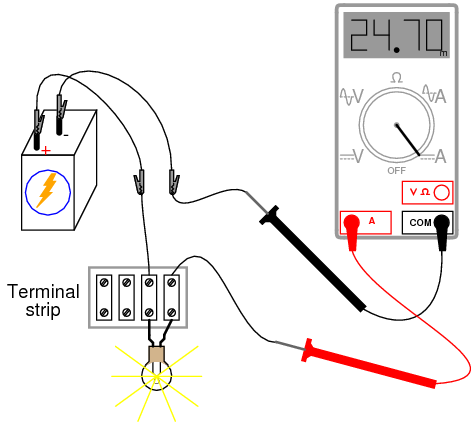
The current figure of 24.70 milliamps (24.70 mA) shown in the illustrations is an arbitrary quantity, reasonable for a small incandescent lamp. If the current for your circuit is a different value, that is okay, so long as the lamp is functioning when the meter is connected. If the lamp refuses to light when the meter is connected to the circuit, and the meter registers a much greater reading, you probably have a short-circuit condition through the meter. If your lamp refuses to light when the meter is connected in the circuit, and the meter registers zero current, you've probably blown the fuse inside the meter. Check the condition of your meter's fuse as described previously in this section and replace the fuse if necessary.
PARTS AND MATERIALS
I'm purposely restricting the resistance values between 1 kΩ and 100 kΩ for the sake of obtaining accurate voltage and current readings with your meter. With very low resistance values, the internal resistance of the ammeter has a significant impact on measurement accuracy. Very high resistance values can cause problems for voltage measurement, the internal resistance of the voltmeter substantially changing circuit resistance when it is connected in parallel with a high-value resistor.
At the recommended resistance values, there will still be a small amount of measurement error due to the "impact" of the meter, but not enough to cause serious disagreement with calculated values.
CROSS-REFERENCES
Lessons In Electric Circuits, Volume 1, chapter 2: "Ohm's Law"
LEARNING OBJECTIVES
SCHEMATIC DIAGRAM
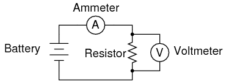
ILLUSTRATION
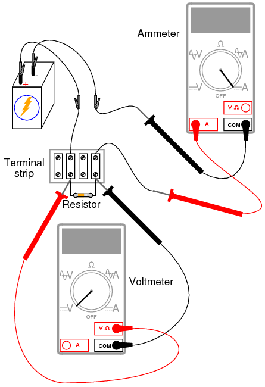
INSTRUCTIONS
Select a resistor from the assortment, and measure its resistance with your multimeter set to the appropriate resistance range. Be sure not to hold the resistor terminals when measuring resistance, or else your hand-to-hand body resistance will influence the measurement! Record this resistance value for future use.
Build a one-battery, one-resistor circuit. A terminal strip is shown in the illustration, but any form of circuit construction is okay. Set your multimeter to the appropriate voltage range and measure voltage across the resistor as it is being powered by the battery. Record this voltage value along with the resistance value previously measured.
Set your multimeter to the highest current range available. Break the circuit and connect the ammeter within that break, so it becomes a part of the circuit, in series with the battery and resistor. Select the best current range: whichever one gives the strongest meter indication without over-ranging the meter. If your multimeter is autoranging, of course, you need not bother with setting ranges. Record this current value along with the resistance and voltage values previously recorded.
Taking the measured figures for voltage and resistance, use the Ohm's Law equation to calculate circuit current. Compare this calculated figure with the measured figure for circuit current:
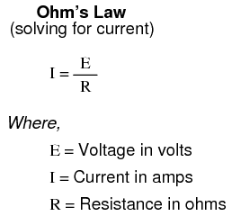
Taking the measured figures for voltage and current, use the Ohm's Law equation to calculate circuit resistance. Compare this calculated figure with the measured figure for circuit resistance:
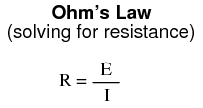
Finally, taking the measured figures for resistance and current, use the Ohm's Law equation to calculate circuit voltage. Compare this calculated figure with the measured figure for circuit voltage:
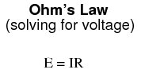
There should be close agreement between all measured and all calculated figures. Any differences in respective quantities of voltage, current, or resistance are most likely due to meter inaccuracies. These differences should be rather small, no more than several percent. Some meters, of course, are more accurate than others!
Substitute different resistors in the circuit and re-take all resistance, voltage, and current measurements. Re-calculate these figures and check for agreement with the experimental data (measured quantities). Also note the simple mathematical relationship between changes in resistor value and changes in circuit current. Voltage should remain approximately the same for any resistor size inserted into the circuit, because it is the nature of a battery to maintain voltage at a constant level.
PARTS AND MATERIALS
CROSS-REFERENCES
Lessons In Electric Circuits, Volume 1, chapter 2: "Ohm's Law"
LEARNING OBJECTIVES
SCHEMATIC DIAGRAM
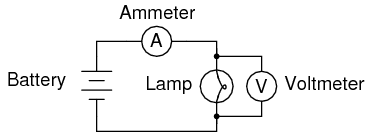
ILLUSTRATION
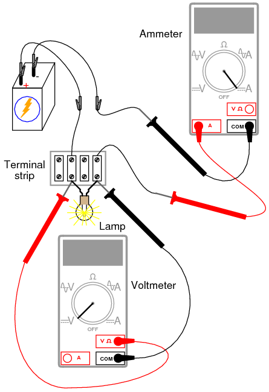
INSTRUCTIONS
Measure the resistance of the lamp with your multimeter. This resistance figure is due to the thin metal "filament" inside the lamp. It has substantially more resistance than a jumper wire, but less than any of the resistors from the last experiment. Record this resistance value for future use.
Build a one-battery, one-lamp circuit. Set your multimeter to the appropriate voltage range and measure voltage across the lamp as it is energized (lit). Record this voltage value along with the resistance value previously measured.
Set your multimeter to the highest current range available. Break the circuit and connect the ammeter within that break, so it becomes a part of the circuit, in series with the battery and lamp. Select the best current range: whichever one gives the strongest meter indication without over-ranging the meter. If your multimeter is autoranging, of course, you need not bother with setting ranges. Record this current value along with the resistance and voltage values previously recorded.
Taking the measured figures for voltage and resistance, use the Ohm's Law equation to calculate circuit current. Compare this calculated figure with the measured figure for circuit current:
What you should find is a marked difference between measured current and calculated current: the calculated figure is much greater. Why is this?
To make things more interesting, try measuring the lamp's resistance again, this time using a different model of meter. You will need to disconnect the lamp from the battery circuit in order to obtain a resistance reading, because voltages outside of the meter interfere with resistance measurement. This is a general rule that should be remembered: measure resistance only on an unpowered component!
Using a different ohmmeter, the lamp will probably register as a different value of resistance. Usually, analog meters give higher lamp resistance readings than digital meters.
This behavior is very different from that of the resistors in the last experiment. Why? What factor(s) might influence the resistance of the lamp filament, and how might those factors be different between conditions of lit and unlit, or between resistance measurements taken with different types of meters?
This problem is a good test case for the application of scientific method. Once you've thought of a possible reason for the lamp's resistance changing between lit and unlit conditions, try to duplicate that cause by some other means. For example, if you think the lamp resistance might change as it is exposed to light (its own light, when lit), and that this accounts for the difference between the measured and calculated circuit currents, try exposing the lamp to an external source of light while measuring its resistance. If you measure substantial resistance change as a result of light exposure, then your hypothesis has some evidential support. If not, then your hypothesis has been falsified, and another cause must be responsible for the change in circuit current.
PARTS AND MATERIALS
The resistor values need not be exact, but within five percent of the figures specified (+/- 0.5 Ω for the 10 Ω resistor; +/- 16.5 Ω for the 330 Ω resistor). Color codes for 5% tolerance 10 Ω and 330 Ω resistors are as follows: Brown, Black, Black, Gold (10, +/- 5%), and Orange, Orange, Brown, Gold (330, +/- 5%).
Do not use any battery size other than 6 volts for this experiment.
The thermometer should be as small as possible, to facilitate rapid detection of heat produced by the resistor. I recommend a medical thermometer, the type used to take body temperature.
CROSS-REFERENCES
Lessons In Electric Circuits, Volume 1, chapter 2: "Ohm's Law"
LEARNING OBJECTIVES
SCHEMATIC DIAGRAM
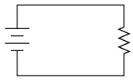
ILLUSTRATION
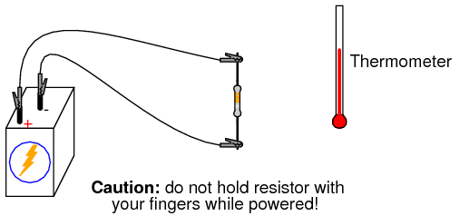
INSTRUCTIONS
Measure each resistor's resistance with your ohmmeter, noting the exact values on a piece of paper for later reference.
Connect the 330 Ω resistor to the 6 volt battery using a pair of jumper wires as shown in the illustration. Connect the jumper wires to the resistor terminals before connecting the other ends to the battery. This will ensure your fingers are not touching the resistor when battery power is applied.
You might be wondering why I advise no bodily contact with the powered resistor. This is because it will become hot when powered by the battery. You will use the thermometer to measure the temperature of each resistor when powered.
With the 330 Ω resistor connected to the battery, measure voltage with a voltmeter. In measuring voltage, there is more than one way to obtain a proper reading. Voltage may be measured directly across the battery, or directly across the resistor. Battery voltage is the same as resistor voltage in this circuit, since those two components share the same set of electrically common points: one side of the resistor is directly connected to one side of the battery, and the other side of the resistor is directly connected to the other side of the battery.
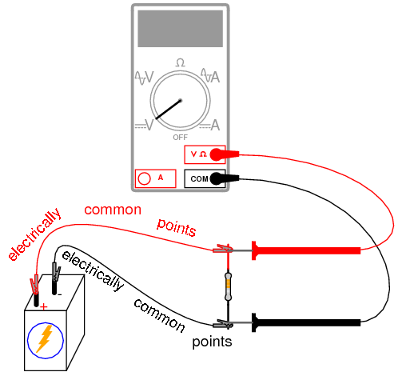
All points of contact along the upper wire in the illustration (colored red) are electrically common to each other. All points of contact along the lower wire (colored black) are likewise electrically common to each other. Voltage measured between any point on the upper wire and any point on the lower wire should be the same. Voltage measured between any two common points, however, should be zero.
Using an ammeter, measure current through the circuit. Again, there is no one "correct" way to measure current, so long as the ammeter is placed within the flow-path of electrons through the resistor and not across a source of voltage. To do this, make a break in the circuit, and place the ammeter within that break: connect the two test probes to the two wire or terminal ends left open from the break. One viable option is shown in the following illustration:
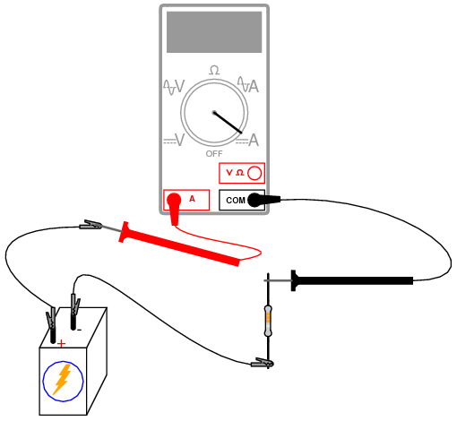
Now that you've measured and recorded resistor resistance, circuit voltage, and circuit current, you are ready to calculate power dissipation. Whereas voltage is the measure of electrical "push" motivating electrons to move through a circuit, and current is the measure of electron flow rate, power is the measure of work-rate: how fast work is being done in the circuit. It takes a certain amount of work to push electrons through a resistance, and power is a description of how rapidly that work is taking place. In mathematical equations, power is symbolized by the letter "P" and measured in the unit of the Watt (W).
Power may be calculated by any one of three equations -- collectively referred to as Joule's Law -- given any two out of three quantities of voltage, current, and resistance:
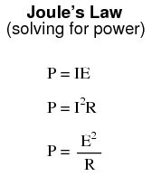
Try calculating power in this circuit, using the three measured values of voltage, current, and resistance. Any way you calculate it, the power dissipation figure should be roughly the same. Assuming a battery with 6.000 volts and a resistor of exactly 330 Ω, the power dissipation will be 0.1090909 watts, or 109.0909 milli-watts (mW), to use a metric prefix. Since the resistor has a power rating of 1/4 watt (0.25 watts, or 250 mW), it is more than capable of sustaining this level of power dissipation. Because the actual power level is almost half the rated power, the resistor should become noticeably warm but it should not overheat. Touch the thermometer end to the middle of the resistor and see how warm it gets.
The power rating of any electrical component does not tell us how much power it will dissipate, but simply how much power it may dissipate without sustaining damage. If the actual amount of dissipated power exceeds a component's power rating, that component will increase temperature to the point of damage.
To illustrate, disconnect the 330 Ω resistor and replace it with the 10 Ω resistor. Again, avoid touching the resistor once the circuit is complete, as it will heat up rapidly. The safest way to do this is to disconnect one jumper wire from a battery terminal, then disconnect the 330 Ω resistor from the two alligator clips, then connect the 10 Ω resistor between the two clips, and finally reconnect the jumper wire back to the battery terminal.
Caution: keep the 10 Ω resistor away from any flammable materials when it is powered by the battery!
You may not have enough time to take voltage and current measurements before the resistor begins to smoke. At the first sign of distress, disconnect one of the jumper wires from a battery terminal to interrupt circuit current, and give the resistor a few moments to cool down. With power still disconnected, measure the resistor's resistance with an ohmmeter and note any substantial deviation from its original value. If the resistor still measures within +/- 5% of its advertised value (between 9.5 and 10.5 Ω), re-connect the jumper wire and let it smoke a bit more.
What trend do you notice with the resistor's value as it is damaged more and more by overpowering? It is typical of resistors to fail with a greater-than-normal resistance when overheated. This is often a self-protective mode of failure, as an increased resistance results in less current and (generally) less power dissipation, cooling it down again. However, the resistor's normal resistance value will not return if sufficiently damaged.
Performing some Joule's Law calculations for resistor power again, we find that a 10 Ω resistor connected to a 6 volt battery dissipates about 3.6 watts of power, about 14.4 times its rated power dissipation. Little wonder it smokes so quickly after connection to the battery!
PARTS AND MATERIALS
Household light switches are a bargain for students of basic electricity. They are readily available, very inexpensive, and almost impossible to damage with battery power. Do not get "dimmer" switches, just the simple on-off "toggle" variety used for ordinary household wall-mounted light controls.
CROSS-REFERENCES
Lessons In Electric Circuits, Volume 1, chapter 1: "Basic Concepts of Electricity"
LEARNING OBJECTIVES
SCHEMATIC DIAGRAM
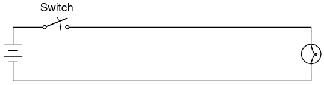
ILLUSTRATION
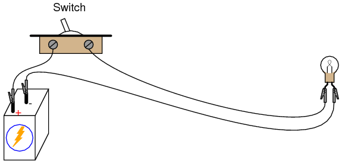
INSTRUCTIONS
Build a one-battery, one-switch, one-lamp circuit as shown in the schematic diagram and in the illustration. This circuit is most impressive when the wires are long, as it shows how the switch is able to control circuit current no matter how physically large the circuit may be.
Measure voltage across the battery, across the switch (measure from one screw terminal to another with the voltmeter), and across the lamp with the switch in both positions. When the switch is turned off, it is said to be open, and the lamp will go out just the same as if a wire were pulled loose from a terminal. As before, any break in the circuit at any location causes the lamp to immediately de-energize (darken).
PARTS AND MATERIALS
Magnet wire is a term for thin-gauge copper wire with enamel insulation instead of rubber or plastic insulation. Its small size and very thin insulation allow for many "turns" to be wound in a compact coil. You will need enough magnet wire to wrap hundreds of turns around the bolt, nail, or other rod-shaped steel form.
Be sure to select a bolt, nail, or rod that is magnetic. Stainless steel, for example, is non-magnetic and will not function for the purpose of an electromagnet coil! The ideal material for this experiment is soft iron, but any commonly available steel will suffice.
CROSS-REFERENCES
Lessons In Electric Circuits, Volume 1, chapter 14: "Magnetism and Electromagnetism"
LEARNING OBJECTIVES
SCHEMATIC DIAGRAM
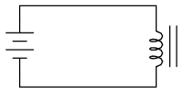
ILLUSTRATION
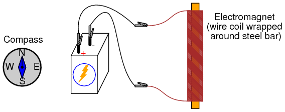
INSTRUCTIONS
Wrap a single layer of electrical tape around the steel bar (or bolt, or mail) to protect the wire from abrasion. Proceed to wrap several hundred turns of wire around the steel bar, making the coil as even as possible. It is okay to overlap wire, and it is okay to wrap in the same style that a fishing reel wraps line around the spool. The only rule you must follow is that all turns must be wrapped around the bar in the same direction (no reversing from clockwise to counter-clockwise!). I find that a drill press works as a great tool for coil winding: clamp the rod in the drill's chuck as if it were a drill bit, then turn the drill motor on at a slow speed and let it do the wrapping! This allows you to feed wire onto the rod in a very steady, even manner.
After you've wrapped several hundred turns of wire around the rod, wrap a layer or two of electrical tape over the wire coil to secure the wire in place. Scrape the enamel insulation off the ends of the coil wires for connection to jumper leads, then connect the coil to a battery.
When electric current goes through the coil, it will produce a strong magnetic field: one "pole" at each end of the rod. This phenomenon is known as electromagnetism. The magnetic compass is used to identify the "North" and "South" poles of the electromagnet.
With the electromagnet energized (connected to the battery), place a permanent magnet near one pole and note whether there is an attractive or repulsive force. Reverse the orientation of the permanent magnet and note the difference in force.
Electromagnetism has many applications, including relays, electric motors, solenoids, doorbells, buzzers, computer printer mechanisms, and magnetic media "write" heads (tape recorders, disk drives).
You might notice a significant spark whenever the battery is disconnected from the electromagnet coil: much greater than the spark produced if the battery is simply short-circuited. This spark is the result of a high-voltage surge created whenever current is suddenly interrupted through the coil. The effect is known as inductive "kickback" and is capable of delivering a small but harmless electric shock! To avoid receiving this shock, do not place your body across the break in the circuit when de-energizing! Use one hand at a time when un-powering the coil and you'll be perfectly safe. This phenomenon will be explored in greater detail in the next chapter (DC Circuits).
PARTS AND MATERIALS
See previous experiment for instructions on electromagnet construction.
CROSS-REFERENCES
Lessons In Electric Circuits, Volume 1, chapter 14: "Magnetism and Electromagnetism"
LEARNING OBJECTIVES
SCHEMATIC DIAGRAM
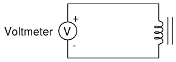
ILLUSTRATION
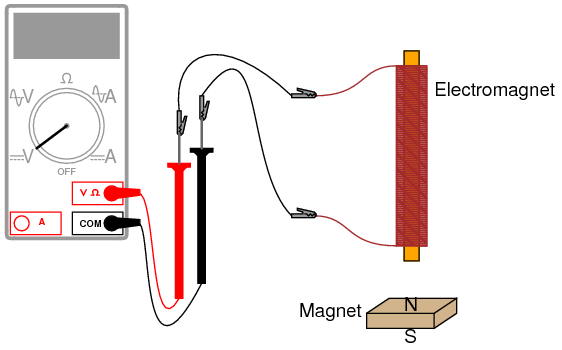
INSTRUCTIONS
Electromagnetic induction is the complementary phenomenon to electromagnetism. Instead of producing a magnetic field from electricity, we produce electricity from a magnetic field. There is one important difference, though: whereas electromagnetism produces a steady magnetic field from a steady electric current, electromagnetic induction requires motion between the magnet and the coil to produce a voltage.
Connect the multimeter to the coil, and set it to the most sensitive DC voltage range available. Move the magnet slowly to and from one end of the electromagnet, noting the polarity and magnitude of the induced voltage. Experiment with moving the magnet, and discover for yourself what factor(s) determine the amount of voltage induced. Try the other end of the coil and compare results. Try the other end of the permanent magnet and compare.
If using an analog multimeter, be sure to use long jumper wires and locate the meter far away from the coil, as the magnetic field from the permanent magnet may affect the meter's operation and produce false readings. Digital meters are unaffected by magnetic fields.
Lessons In Electric Circuits copyright (C) 2002-2023 Tony R. Kuphaldt, under the terms and conditions of the CC BY License.